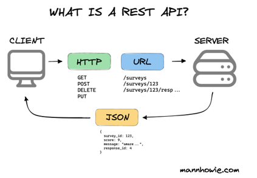

HTML
My first real experience with HTML was in my senior project, Good Driving Incentives, where my group built a site that rewarded truck drivers for safe driving (Link).
I’d say that this project prioritized functionality over looks, which was important, but it left the HTML side of things a little bare when it came to design and color. Still, without HTML, there’s no real foundation for CSS or JavaScript to do their thing.
It may not be the flashiest part of web development, but it’s extremely important to the structure of any site, and I’ve come to understand this even more while building this website.
Now, it’s fun to tweak and adjust my site and realize how much of it comes down to solid HTML underneath.
CSS
CSS was where I really got to add personality to the sites I worked on.
In the Good Driving Incentives project, I used it mostly for the design of the rewards section, where drivers could search for items in a catalog.
I enjoyed tweaking how to display items to the user, so it was clear and nice to look at without hassle. Now, on my personal website, I’ve been using CSS to give pages my own personal flair—tweaking the layout, colors, and style until it feels right.
What I like about CSS is that small changes can completely change how a site feels, even if the HTML stays the same. It makes the difference between something that just works and something that’s enjoyable to look at.

REST API
I worked with a REST API during my senior project, where we integrated eBay’s Finding API into our site.
When a user entered an item into our search bar, the site made a request to the API’s endpoint, which returned JSON data from eBay’s product catalog.
From there, we parsed the response and displayed the results directly to the user. It was a great way to learn the flow of sending requests, handling responses, and making sure the data fit smoothly into our front end.
One of the main challenges I ran into while implementing this API was dealing with CORS errors, which gave me a better understanding of how browsers handle cross-origin requests.
We managed to solve this issue with the help of AWS.
AWS
I’ve gotten some solid experience with AWS through a couple of my projects.
In my pizzeria project, I used AWS Non-Relational database DynamoDB to store/retrive orders and toppings, which gave me a good introduction to handling data in the cloud.
Later, in the Good Driving Incentives project, I expanded on that by using AWS to store user information and order details with relational databases (Amazon RDS).
I worked with API Gateway, S3 storage, and Route53 which helped me see how different AWS services can connect and support a full application.
On top of that, I also took a class that focused exclusively on AWS, where we followed Amazon’s own guidelines to build projects and get hands-on experience with their services.
IDEs
I’m very comfortable using IDEs like VSCode and IntelliJ to get work done efficiently. I used IntelliJ for my ExtendedConnectX Java project to manage code, debug, and run tests, which kept everything organized.
Over my last few semesters in Clemson (and now), I’ve relied on VSCode for everything from small scripts to full web applications.
These tools have taught me to navigate code quickly, catch errors early, and streamline my workflow. Being familiar with these types of IDEs means I can jump into new projects without wasting time figuring out the environment.
Azure DevOps
I got to work with Microsoft Azure DevOps during the Good Driving Incentives project, and it was a great way to stay organized as a team.
We used it to plan out our weeks, assigning tasks through user stories and tracking progress with sprints.
It helped us clearly see who was working on what and keep everyone on the same page. We also used it to keep periodic backups of our project, which gave us the peace of mind that nothing important would get lost.
Overall, Azure DevOps made the whole project feel more structured and professional, and it gave me experience with tools that a good amount development teams use every day.
GitHub
In the Good Driving Incentives project, we used GitHub to manage our code and keep everything organized.
Each teammate worked on their own branch, which made it easier to focus on our individual parts of the project without stepping on each other’s work.
Once changes were ready, we would carefully review and test them before merging into the main branch to make sure nothing broke.
One of the neat parts was that every push to the main branch automatically redeployed our React app, so we could instantly see updates live.
This kept our workflow and taught me a lot about version control, collaboration, and continuous development.
I’m curious how many projects in real world projects actual deploy after pushing to the main branch.
React
Our entire Good Driving Incentives project was built on a web app using React. I’ll be honest, I didn’t do much of the initial setup, but I did get hands-on with maintaining and deploying the app.
My main contribution was giving the React app its own unique domain, which I set up using AWS Route 53. I also helped with managing the app once it was running, making sure updates were deployed smoothly and the site stayed accessible.
This gave me experience with connecting cloud services to web applications and understanding the infrastructure side of a React project. Even though I wasn’t the one that built out the React components,
I still learned a lot about what it takes to support/manage a React application.
Photo By: Ethan Coffey